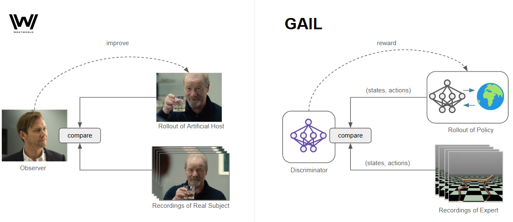
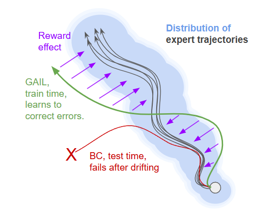
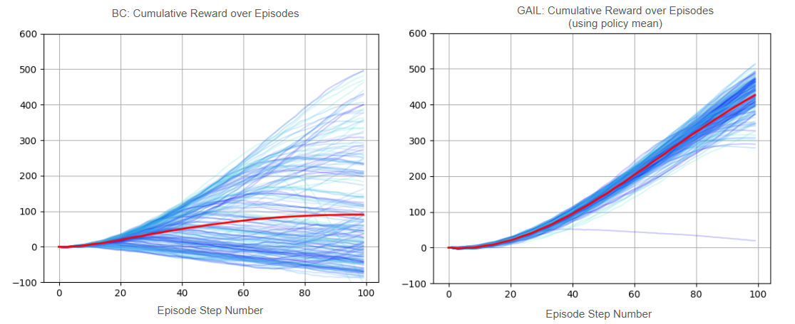
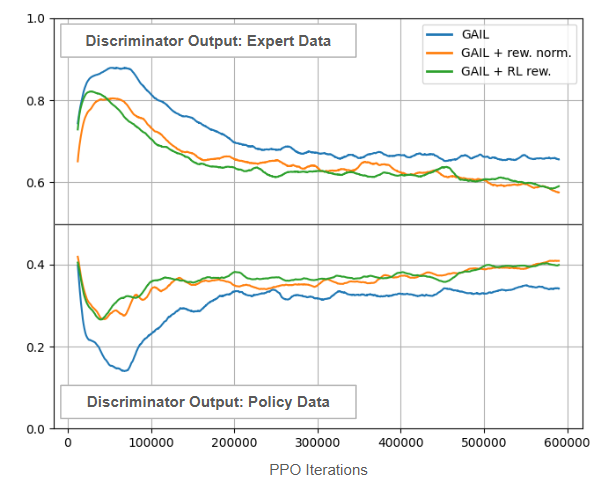

GAIL
Rewarding for Fidelity
What are you testing for?
In season 2 of Westworld, scientists are trying to make artificial humans that are indistinguishable from the real thing. These "hosts" are made not only to act as convincing humans, but to act as specific humans. To clone the behaviors of certain people, the scientists record a series of interactions with them. Later on, when testing the "host", they put the host in an identical circumstance and track how long it remains faithful to the recorded actions. When one subject asks, "What are you testing for?, " a concise answer is given: "Fidelity." If the host proves to be unfaithful to the recording, it is scrapped, the design improved, and the new version re-evaluated.
A real-world analog of the fidelity test in AI is an algorithm called GAIL, or Generative Adversarial Imitation Learning. In this algorithm, a series of demonstrations are used as a point of reference for ideal behavior, and a policy is trained with RL to match these demonstrations. Rather than a reward signal coming from the environment, a reward signal comes from a third-party (a discriminator network), measuring how similar the policy’s behavior is to the demonstrations. In the optimal case, if the discriminator cannot tell the difference between the policy and the original demonstrations, then the training is successful.

If you are familiar with GANs this will look very familiar, with the discriminator network serving the same role in both cases. Our "generator" is now a policy, which generates examples by interacting with the environment. Instead of backpropagating directly through the discriminator and into the policy, we use the discriminator output as a reward. If we did the former, this would be a very roundabout way of performing behavior cloning, and supplying feedback to our policy for single steps. Instead, we want our policy to learn how to approximate the expert (and maintain this approximation) over many steps. RL will optimize not for single rewards, but for long-term returns.
Fixing BC Shortcomings
GAIL is one solution to fixing a common failure mode of behavior cloning (training a network directly on the recorded (state, action) tuples of the expert), which is that it is susceptible to drifting into unfamiliar states and then failing during test time. While we can train a network to output good predictions of expert actions under the distribution of states in the training data, it may encounter slightly different states in practice. This will cause small errors, leading to even more unfamiliar states, causing larger errors, and so forth. GAIL corrects for this by actually interacting with the environment during training and observing these failures. Through the reward signal, the policy can learn how to correct for drift and stay faithful to the demonstration trajectories. This is the critical addition over behavior cloning: in GAIL, the policy in not just mimicking the expert, it is learning how to maintain this behavior over time and in the face of errors or stochasticity.
The classic visualization of this is something like the following:

While the behavior-cloned policy will often diverge from its training regime and fail, the GAIL policy is actively interacting with the environment during training. By following the RL objective, it learns how to (hopefully) stay within the distribution of the training data.
GAIL with PPO
In practice, to perform GAIL we need to start with an RL algorithm of some kind and also maintain (1) a discriminator network and (2) buffers of expert and policy actions. During the RL loop, the discriminator is trained to classify between the expert demonstration and the policy, while the policy is rewarded for the degree to which it fools the discriminator.
Below we can see an updated outline of the (high level) PPO algorithm with additions for GAIL:
GAIL+PPO: Repeat until converged:
Start with expert demonstration trajectories of desired behavior. Use the policy to collect data from the environment.
Replace the reward with the degree to which the discriminator predicts a given (s,a) pair is from the expert.
Use samples from the expert data and the policy-generated data to update the discriminator. The discriminator should classify between the two data sources.
Use the collected data to update the policy:
- The policy should predict actions proportional to how beneficial they are.
Use this data to update the value network:
- The value function should predict the expected return from each state (the experienced return).
Throw away the data: it no longer reflects the current policy's behavior.
The additions for GAIL are highlighted. These additions add a lot of hyperparameters, and we need to balance the training of PPO with the discriminator. Just as the policy and value network take on many update steps per round of data collection, we can also update the discriminator for many steps.
I decided to use PPO and HalfCheetah-v4 since I already have lots of utilities for working with this environment, including expert data from running SAC policies (50 examples of 100 steps each). I also compared with behavior cloning and PPO using the environment reward. Approximate results are as follows:
SAC Expert: 630
GAIL: 347, 427 using the policy mean directly
PPO: 204, 249 using the policy mean directly
BC: 108
While GAIL was not able to recover the full performance of the expert, it clearly outperforms the other two baselines. PPO is outperformed because we have access to additional information, and BC fails due to the issues described above. The BC vs GAIL comparison is interesting to investigate further. We can plot cumulative returns vs episode steps to see how our returns develop over the course of an episode:

Here we see the returns of 200 episodes of BC (left) and using the mean output of the GAIL policy (right). The red curve is the average return among all episodes at that step. This clearly highlights the difference in the two algorithms: while BC usually starts out alright and is certainly capable of achieving high returns, many episodes will diverge at some point (and this seems to happen very early in many cases). Therefore, the average return is representing a large gamut of results. The GAIL outcomes are much more reliable, and while we see one or two faulty episodes the majority stay on track to high returns.
Small Extensions
There are a few additional things we can do to extend this setup. A common practice (which I did not attempt) is to use BC as a starting point for GAIL, so that GAIL is acting as a fine-tuning routine. One concern here is that the policy will unlearn before the discriminator burn-in time, so you may need to train the discriminator ahead of RL as well.
Perhaps a more interesting extension is that if we have access to the environmental reward function, we can combine both rewards so that we have something like "RL grounded in demonstrations." I tried this by keeping a running buffer of RL and GAIL rewards, respectively, and setting the current reward to be normalized(pporeward)+normalized(gailreward). Normalization just uses the mean and standard deviation of the respective running buffer.
Based on the success of the above, I also tried GAIL with the same reward normalization technique applied, and this resulted in a slight boost. See training curves for the relevant experiments below:

I was pleasantly surprised that both of these additions increased the performance noticeably. Adding reward normalization (orange) is an easy change that seems to yield both earlier gains and higher overall performance. Using RL environment rewards and GAIL rewards together (green) is even better, perhaps letting PPO explore high-reward strategies while using demonstrations to boost a baseline strategy. In this version we also see rapid improvement that is found in raw PPO. For the GAIL-only approaches, there is a clear delay in improvement, probably while the discriminator gets up to speed.
GAIL with reward normalization achieves an average return of 412 (500 if using policy mean), while the combined reward method achieves 456 (560 using policy mean).
Another interesting metric we can track is the discriminator output over the course of training. In the discriminator output space (sigmoid), 0.5 corresponds with inseparable classes, while 0.0 for the policy and 1.0 for the expert would indicate perfect separability. Initially the policy and expert are easily separable, although the discriminator also needs to learn this difference, so we see an early trend away from 0.5 in the discriminator output for expert and policy data. As the policy improves, this output slowly creeps back towards 0.5, indicating that the policy is fooling the discriminator to a greater extent:

Observations and Larger Extensions
One thing that became quickly clear when experimenting with GAIL is that there are many moving pieces. While PPO has a policy and value function that need to train in tandem, we now have a discriminator that is training dynamically as well. Each of these might have their own learning rate, batch size, updates, etc, and it can be hard to balance. I tried various combinations until I got something that was workable, but I am sure there is much room for improvement. I think the result I am most happy with is the combined rewards, which drastically improves over both GAIL and PPO individually. This is certainly something to try if you have 10s of expert examples as well as some notion of what an environmental reward might look like.
This post has been underway for a long time, and the main culprit is what I will detail in a follow-on post: extending to GAIL to (1) only look at states and (2) only look at image states. This is then akin to video demonstrations: we see individual image frames of the desired behavior but do not necessarily have access to action information or underlying true state.
These extensions threw some major wrenches in my setup, and required all sorts of rearchitecting (not to mention long run times). I am not sure I can recommend the image-states approach, but I think it is at least worth writing up my account of what needs to be considered along the way. Stay tuned.
Recent Posts:
GAIL
Rewarding for Fidelity
April 29, 2025
MuJoCo Cronenbergs
(Mis)Adventures in Style Transfer, Part 2
February 10, 2025
MuJoCo CycleGAN
(Mis)Adventures in Style Transfer, Part 1
January 27, 2025
More Posts